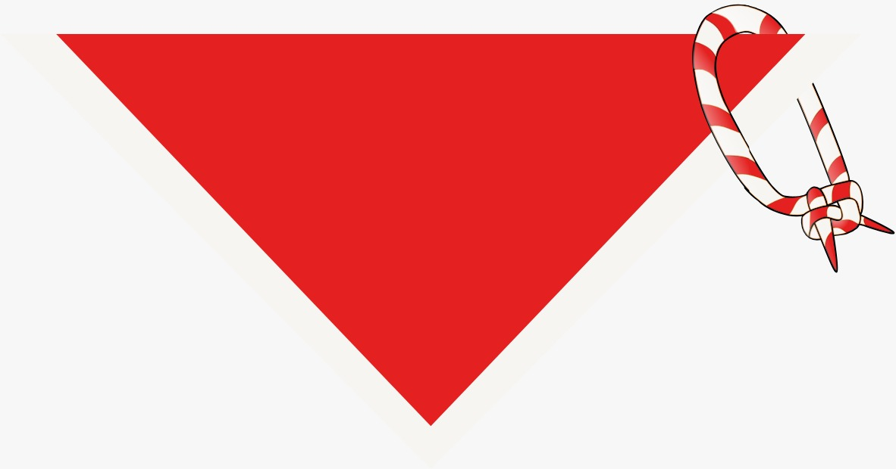

El nostre agrupament
Som el CAU
de Martorell.
1963L'any que va començar
la nostra aventura
la nostra aventura
Més de seixanta anys fent cau
Canviem amb el temps.
El compromís es manté.
El CAU de Martorell, l'Agrupament Escolta i Guia Joan XXIII, es va crear l'any 1963 i, tot i que amb el pas del temps ha anat canviant i progressant, segueix mantenint la seva funció inicial: educar segons el mètode escolta i guia la infància, l'adolescència i la joventut de l'entorn, ajudant-los a ser persones més crítiques, conscients i conseqüents.

El nostre foulard vermell, amb el ribet blanc, ens representa i ens identifica allà on siguem.
Una comunitat que educa
El nostre local és el punt de trobada.
Des de fa anys, el CAU disposa d'un local ubicat a la Vila, la part més antiga i amb més història del municipi. És la seu social de l'Agrupament i el nucli de tota la nostra activitat.
L'organització funciona gràcies a la dedicació dels caps i quel·les i a l'ajuda de les famílies, d'altres entitats socioculturals i d'antics caps i quel·les que continuen vinculats al projecte.
Formem part d'un moviment més gran.
El nostre agrupament pertany a l'associació de Minyons Escoltes i Guies de Catalunya. Ens adherim a les seves bases pedagògiques i compartim la seva visió, missió, valors i estructura.
Coneix Minyons Escoltes i Guies de Catalunya ↗Què fem durant el curs?
Cada dissabte, una nova experiència.
Dissabtes · de 16.00 a 18.00 h
Plaça de l'Església
Fem cau cada dissabte. Cada unitat fa una sortida per trimestre: passem un cap de setmana fora, dormint en un cau dels pobles del voltant o acampant en un terreny.
A l'estiu arriba la calor i, amb ella, les ganes de marxar de campaments. Són entre set i deu dies de tancament, en què les unitats més petites fan activitats lúdiques i reflexives, mentre que les més grans també fan uns dies de ruta.
A més, compartim sortides amb tot l'Agrupament en dates assenyalades com Setmana Santa i la Sortida de Passos.